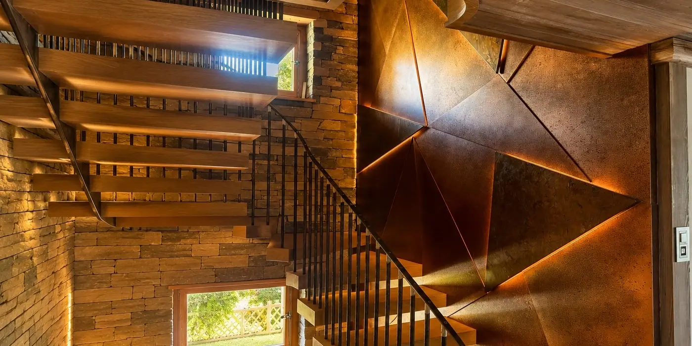
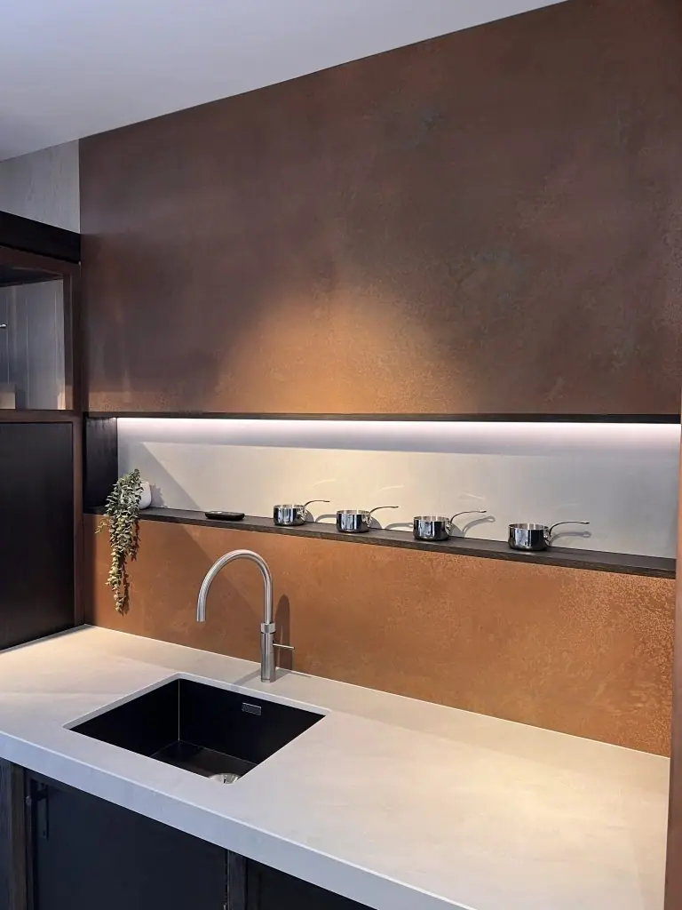
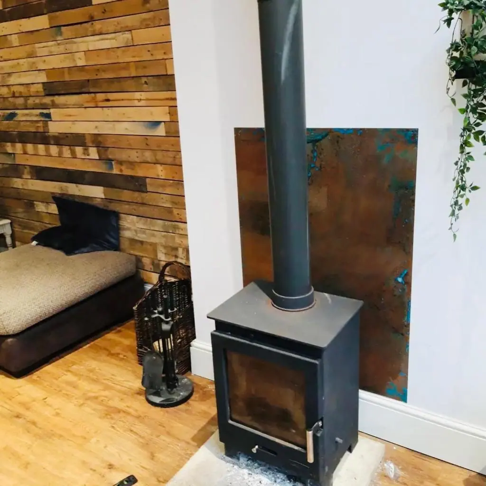

You will regularly see copper wall panels in homes, bars, offices, reception areas, bathrooms, kitchens and other places where a focal point can have maximum impact.
All copper wall panels are bespoke items and can be cut to size. Contact our team for a personalised copper wall panel quote .
Choose a finish



Cut to size
Each of our bespoke finishes can be purchased in sheets cut to your size, perfect for your project.
- Pricing includes delivery and turnaround time is just 5-8 weeks
- Each piece is coated in a gloss finish lacquer that prevents the sheet from further aging

Ready to go
We provide bespoke cut metal, and each of our finishes can be wrapped around wood and lacquer finished. Get in touch for a bespoke quote . If you’re a business please use our Bespoke Quote for Businesses form .
Copper Wall Panel Finishes
Finishes include:
- Ayrshire finish – Characterful patina with specks of verdigris throughout to deliver a superb aesthetic that is always revealing itself
- Cheshire finish – Rich, warm finish close to natural copper but darker and with more depth thanks to layers of colour throughout
- Hertfordshire finish – Opulent, luxurious finish with lots of verdigris throughout, including larger swathes of colour
- Northumberland finish – Lovely swirling finish with varying swathes of verdigris along with varying depths of colour
- Natural finish – Warm and welcoming finish of natural copper with its own variations throughout the metal
Copper wall panels can be aged or left natural. Aged copper wall panels will be artificially aged using a special process and then be sealed in lacquer to stop ageing and protect the finish.
Natural copper wall panels can be either left natural or lacquered.
BESPOKE COPPER WALL PANELS
Copper wall panels are built to order so can be designed to your specific requirements. Choose from a range of natural and aged finishes to create the design you’re looking for.
Copper can be artificially aged using specialist techniques that use chemicals to recreate the natural ageing process. It’s an exact science but one we are experts at.
Once the wall panels reach the desired look, we stop the ageing process and seal it inside lacquer. The lacquer ensures the ageing stops and protects the beautiful finish.
All panels can be laser cut to any size or shape with a maximum of 2000mm x 1000mm. Multiple panels can be used for larger spaces and where aged, they will be aged together to deliver a coherent patina across all panels.
FITTING YOUR COPPER WALL PANELS
Copper wall panels are simple to fit. They are relatively light so can be fixed in place using adhesive or epoxy resin.
Prepare the wall, ensure it’s as flat as possible, apply the adhesive to the wall panel and offer up the panel to the wall. Adjust until it’s perfectly aligned.
That’s it!
Contact Halman Thompson today for a fast, free, copper wall panel quotation!


If you can dream it, we’ll make it.
Bars, balustrades, staircases, worktops, cladding and pieces that don’t have a name yet. Our designers and craftspeople work in brass, copper, zinc and steel, and alongside wood.